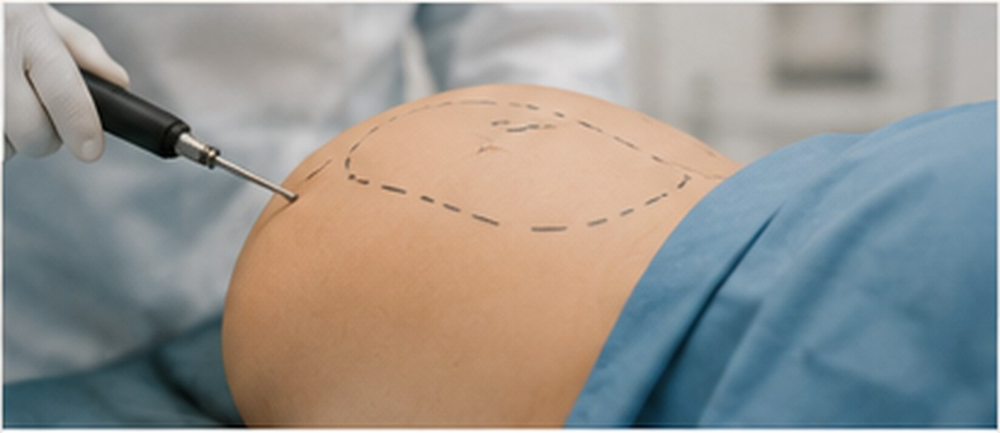
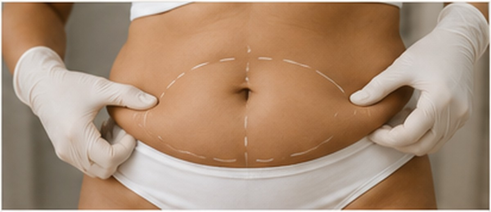

Candidacy
Health history, BMI range, skin quality and treatment areas are reviewed.
Liposuction is a surgical option for selected localized fat deposits when skin quality and health factors are suitable.
SRENOVA plans liposuction around safety, contour smoothness, proportion, compression care and realistic recovery rather than promising weight loss.

Health history, BMI range, skin quality and treatment areas are reviewed.

Step 02The goal is smooth shape transition, not aggressive over-removal.
 Step 03
Step 03Compression, swelling timeline and follow-up visits are explained.
Liposuction can refine selected areas, but it cannot tighten major loose skin or replace weight management.
A proper consultation explains incision points, anesthesia plan, contour limits, swelling, garment use, risks and when final shape can be judged.
Clear boundaries make the consultation more trustworthy.
Works best for defined pockets.
Not a treatment for obesity.
Significant laxity may need another procedure.
Final contour appears gradually.
These points give visitors quick clarity before they message the clinic.
Requires medical suitability.
Swelling and garment use are common.
Improves selected areas, not overall weight.
Final shape takes time as swelling settles.
Clear answers help clients compare options with more confidence.
Discomfort and soreness are expected after surgery. Pain control and recovery instructions should be explained before the procedure.
It mainly removes fat. Skin tightening depends on elasticity; significant loose skin may need a different procedure.
Some change is visible early, but swelling can take weeks to months to settle.
Removed fat cells do not return in the same way, but weight gain can still change body shape.
Book a SRENOVA consultation for a careful assessment, realistic options and a treatment plan suited to your concern.